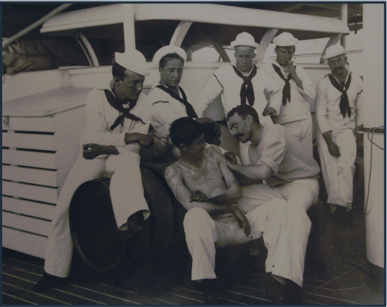

Origins
The development of an "identifiable tattooing tradition" among sailors may be an extension of their "choice of social self-demarcation through distinctive dress and accessories." The sailor was proud of his profession and "wanted people to know that he went to sea." Tattoos are also practical: they help to identify the body of a drowned sailor.
18th Century
By 1740, seamen were recognizable at a glance by their distinctive dress and tattoos. Around a third of British and a fifth of American sailors had at least one tattoo. English and American sailors circa 1700 – 1750 used ink or gunpowder to create tattoos by pricking the skin and rubbing the powder into the wound. Following the American Revolution, American sailors' tattoos were listed in their protection papers, an identity certificate issued to prevent impressment into the British Royal Navy.
19th Century
Sailor tattoo motifs had already solidified by the early 19th century, with anchors, ships, and other nautical symbols being the most common images tattooed on American seafarers. In the late 19th century, tattooing among sailors began to shift from a pastime on ships to professional shops in port cities. The development of electric tattoo machines in the 1890s enabled faster and more precise tattooing. To fulfill increased demand for tattoos, artists began to buy and sell sets of pre-drawn designs, especially simple designs with black outlines and limited colors, to enable quick work
20th Century
There are estimates that more than 65% of US Navy sailors had a tattoo during World War II. A study of Honolulu, Hawaii, in 1943 found that 65% of customers visiting the city's tattoo shops were non-commissioned Navy personnel, 25% were enlisted Army personnel, and the remaining 10% were defense workers. Sailors continued to use tattoos for identification in World War II: Social Security number or service number tattoos were available for $1.50. A specific style of “old-school” tattoos became popular among sailors in the 1930s–1940s, featuring traditional symbols and other maritime-inspired images inked in simple black lines with color touches.
21st Century
In the 2010s, "retro" sailor-style tattoos continued to be popular as part of the American Traditional style. In 2016, the US Navy liberalized its tattoo policies, allowing sailors to have tattoos below the knee and on the forearms and hands, as well as tattoos up to one inch by one inch on the neck, including behind the ear. Sailors with visible tattoos became eligible for recruiting duty and training recruits at boot camp.